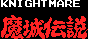
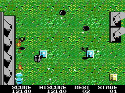
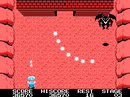

Game Description
This oldy-but-goldy is one of the best shoot 'em ups there is on
the MSX1 computer. The first time I played this one, I was really grasped by the
details and diversity of the background and the enemies. As far as I know it was
the first game that had a end-of-level guardian. And Knightmare is also one of
the toughest games I have played on the MSX1 (That is, if we forget about
'Salamander' for a sec...) Now, ten years after its release, it is still a great
game to release yourself from everyday frustrations. But then again, the
difficulty is very frustrating as well... I only finished it once... but I
'poked' myself invincible... (^^;) When playing fair, I usually get to the third
guardian dude...

Sean Young about Knightmare:
I've finished this game without cheating!
Knightmare is one of my all time favourites. It's graphics were far ahead for
its time. The playability has never been matched by any PC game. It's a real
plain, good ole shoot 'em up. They don't make shoot 'em ups like they used to
do. By the way, did I mention that I've finished this game ?

Specifications
Knightmare is a MSX1 ROM cartridge of 32Kb. No megaROM.
The game is also included in the Konami Games Collection 1. In this version, the
music is improved for the Sound Cartridge.
Genre
Vertical scrolling shoot 'em up.
Playing Tips
Icon List
You can find icons in the screen. They show up as question
marks in a square. Some are hidden, and appear when you shoot at them. Fire at
the questions marks a number of times, and it'll open up.
Question mark icon.
You can't walk over it), but
your ammo can pass through.
500 bonus points.
All enemies and bullets
cease to exist.
Freezes all enemies for 30
seconds, and bullets disappear.
Keeps you one extra incarnation
from Game Over.
A top secret icon. It'll appear
after a 'game over' in the levels you have finished. It is always hidden, and
needs a lot of shots to be opened. If you take it, you'll warp to a further
stage.
Canals without Bridges
There are also bridge icons. They are hidden in
the canals, and sometimes they are necessary to cross these canals (Knights have
the habit to drown while swimming, cause of their heavy armour.) So beware if
you use a red power crystal!
Crystals
There are two types of crystals: Power Crystals and Weapon
Crystals. Power Crystals always have a P in them, and Weapon Crystals silver
coloured, and if you shoot at it, it'll show different weapons.
Power Crystals
A black crystal awards you
with 1000 bonus points.
A blue crystal will increase
your agility.
A light blue crystal will
raise a shield to stop enemy projectiles.
A white crystal will
temporarily render you immune to enemy attacks
A red crystal will turn you in
a deadly flaming knight, but also blocks your fire power. This can by pretty
annoying, even fatal if you need to open a bridge icon!
Weapon Crystals
This the enhanced default weapon. Instead of one you have two arrows.
If you get this weapon twice, you can fire three shot simultaneously in stead of
two.
If you have this
weapon, you'll fire three fireballs simultaneously, which will pass through
enemies slaughtering them. When you grab the weapon another time. it'll fire
less dispersed. ...not exactly my favourite weapon...
Boomerangs. They
pass through enemies and return to you. Very powerful, but has a limited range.
The first time you grab this weapon, you'll have two boomerangs, the next time
you'll have three. ...not exactly my favourite weapon either...
Knives. These
are the same as the arrows, but the first you grab it, you can fire three shots
simultaneously, only to get two knives the next time. It's favourite weapon!
Flame knives.
These are like the arrows, only they pass through enemies and you can only have
one.
Strategies
The attacks you get in each stage are issued
after each other. If you leave one or more enemies on the screen, the attack
will last longer, and so it'll take longer before the next attack. And because
the screen scrolls at a constant rate, you'll get less attacks, which makes life
a lot easier.
End of Level Guardians
There isn't much to say about the End of Level
Guardians, though you must try to stay at the bottom of the screen at all times.
Specially in stage 7, doing otherwise will kill you for certain...
Happy Slaughtering !
This page is maintained by Sean
Young.